city lights
“City Lights” addresses a poorly lit urban area, Corvetto, aiming to restore a sense of safety after dark. The focus isn’t solely on adding more light sources, but on maximizing the impact of existing ones. Additionally, it strives to augment visibility, promoting greater awareness for pedestrians. Picture navigating a dimly lit boulevard alone, feeling uneasy and watchful. The fear of looking back, uncertain if someone follows, is all too familiar.
What if you could maintain forward focus while simultaneously observing behind you? What if this reflection occurred effortlessly in front of you, perhaps on the light poles lining your path? A sanctuary of light, providing reassurance and visibility. The result? A collective sense of heightened security and visibility, prompting a greater sense of accountability and awareness among all.
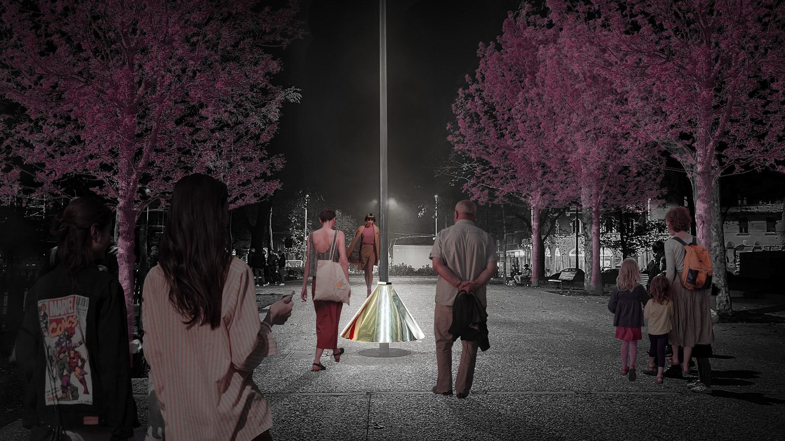
Site analysis
Corvetto situated in the southeastern part of Milan, is predominantly characterized by residential buildings and educational institutions. Although it exudes vibrancy during the day, the atmosphere tends to shift to a quieter and somewhat less secure state at night.
Piazzale Gabrio Rosa serves as the bridge between the bustling commercial district and the quieter, more residential area, making it the focal point for social gatherings and interactions.
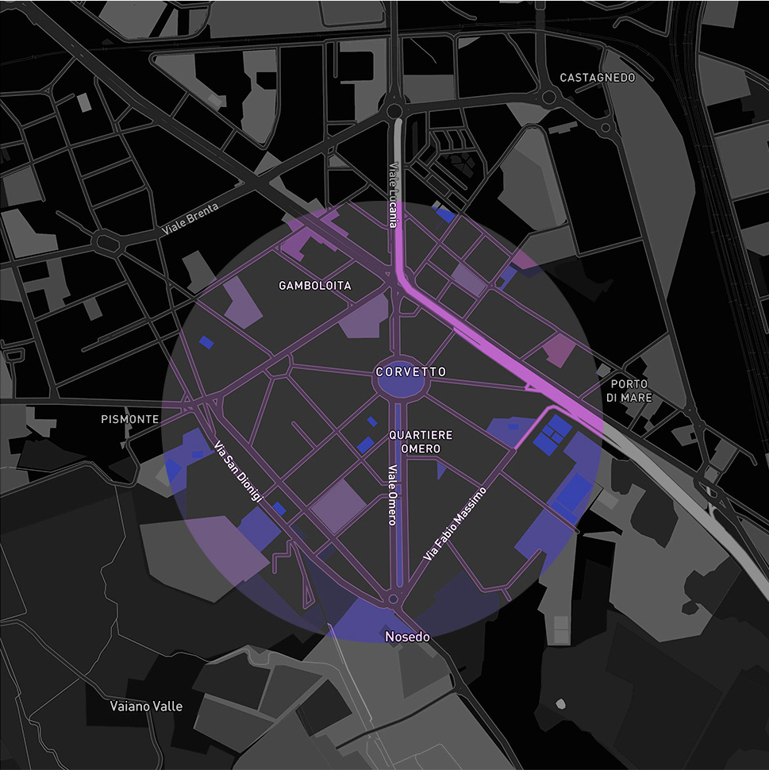
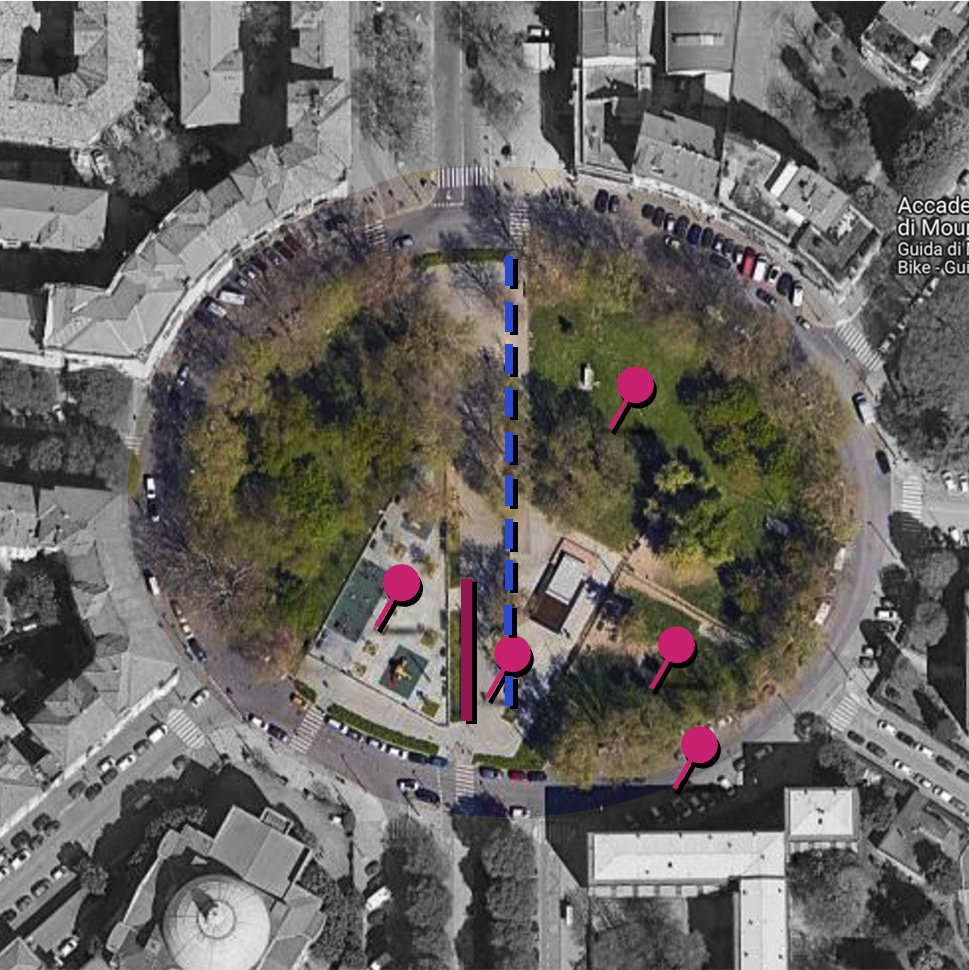
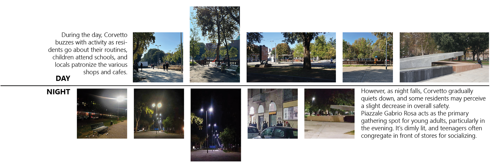
Time-based analysis of Piazzale Gabria Rosa
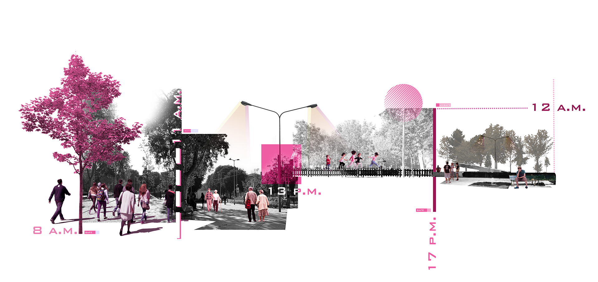
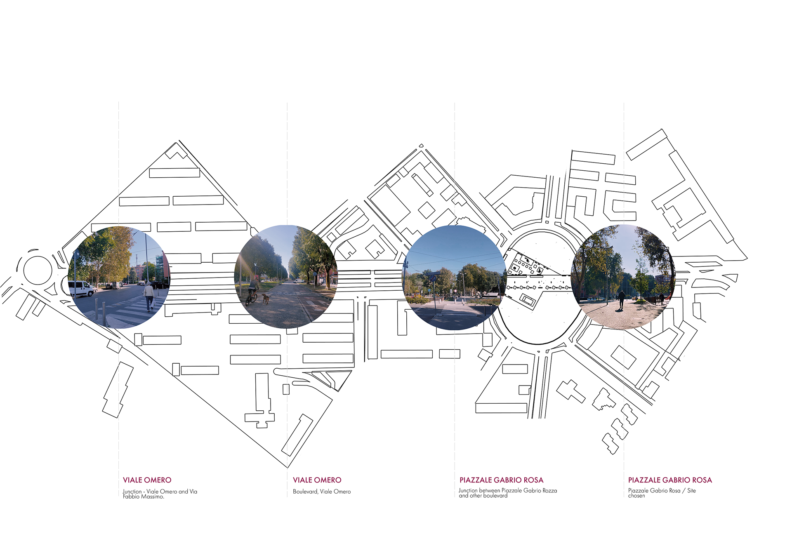
Visit scenario
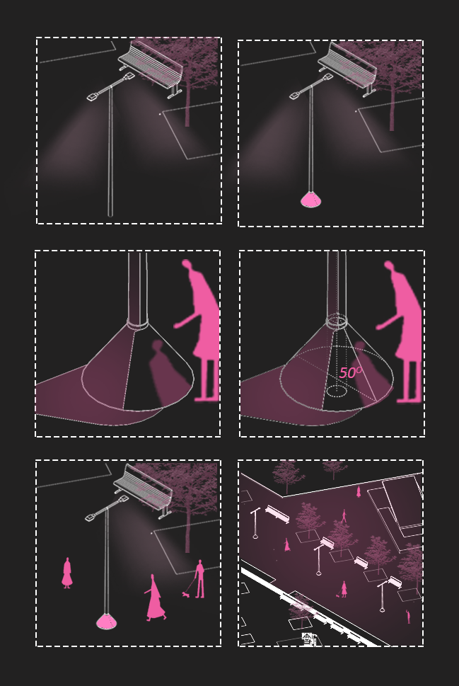
1. Dimly lit boulevards / 2. breed insecurity. / 3. The cone shape mirrors the pole, offering multiple views. / 4. Enhances safety and ambiance, allowing people to feel secure. / 5. Attach a 12.7 cm reflective surface to the central light pole. / 6. Optimal reflection angle: 50°. / 7. Boulevard transforms into a vibrant, secure space
Technical details
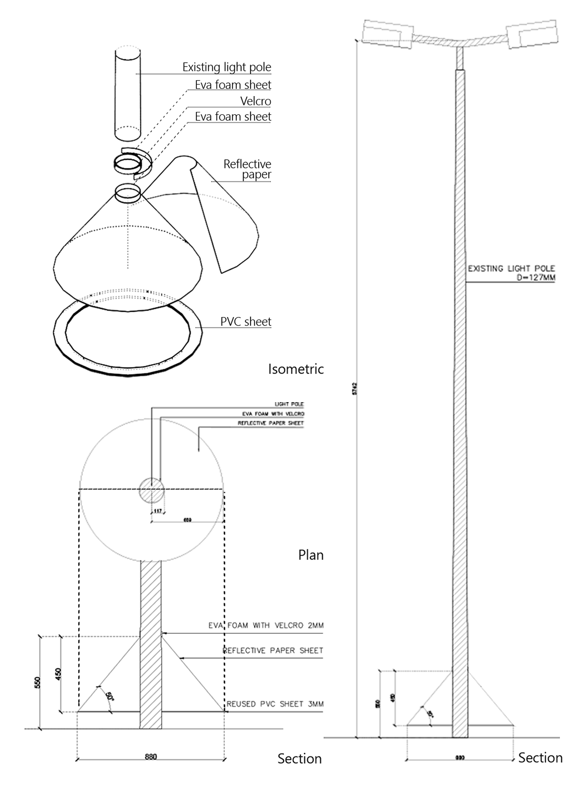
Material
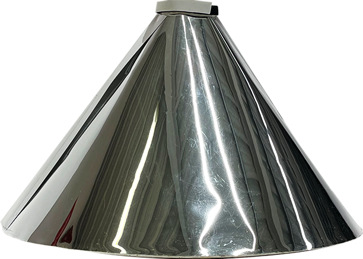
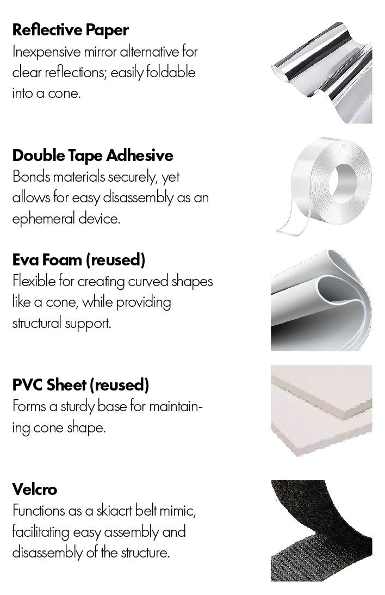
Documenting community interaction
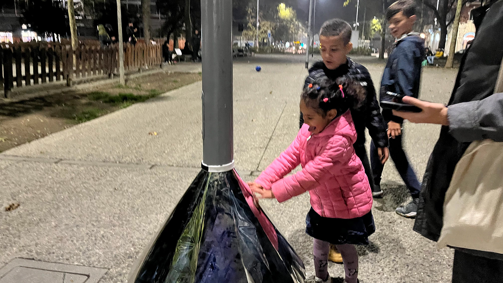
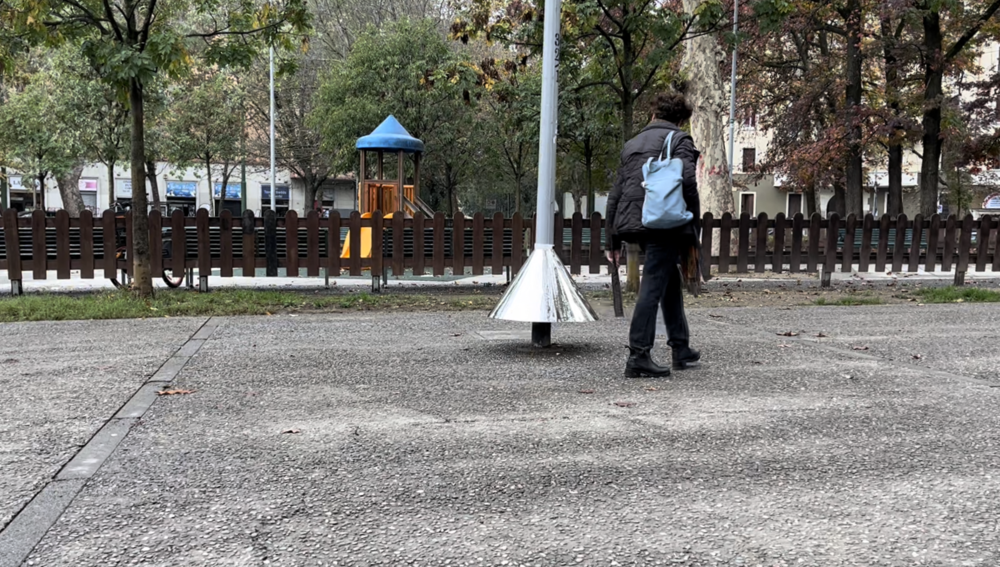
I work across architecture, scenography, and design. I'm interested in how people experience space, especially in cities, and how stories can change the way a place is perceived. For me, projects are often a way to investigate a question and understand a subject rather than arrive at a fixed answer.